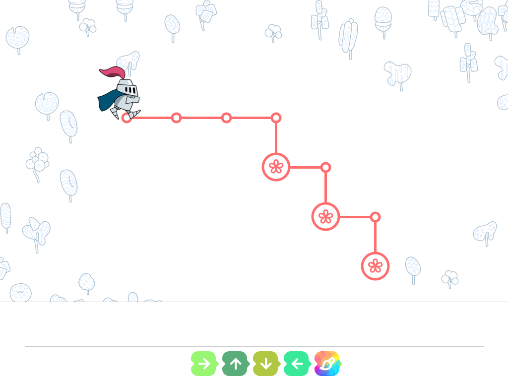
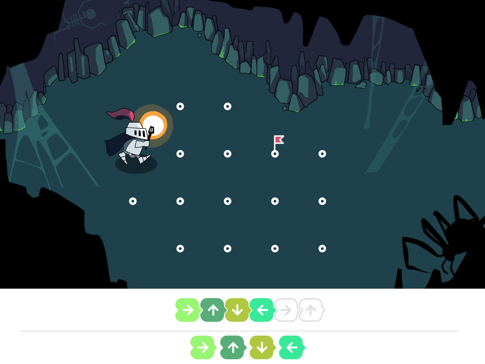

Идея заключается в том, чтобы освоить интерфейс без использования текста. Дети никогда не читают тексты. А так же в том, чтобы этого самого «интерфейса» правктически не было, ведь время на его усвоение у нас нет.
Итак, все элементы по которым ударяем пальцами объемные, все сцены — мультяшные.
Отказываемя от сложных конструкций типа шапка, блок слева, блок справа. Все кнопки под руками, руки ученика не закрывают область рисованой сцены. В дальнейшем, ширины экрана будет как раз хватать на 16 команд, которые выстроятся в горизонталь.


Запомнили: нажали кнопку — объект движется. Теперь можно добавить сетку, по которой происходит вся механика.


Как только мы взяли кисть, плавно появляется новая кнопка.


Пусть балуется с кнопками, пока не покрасит объекты в нужные цвета.
Настоло время команд. Чтобы было очевидно перетаскивание, делаем гнезда для фишек. Чтобы ребенок не ошибся, и как по туториалу сделал все правильно, гнезда и команды имееют одну форму.

Сразу после действия с фишкой, сцена выполняется анимация.

Почти все по-взрослому: нет подсказок.

В какой-то момент, добавляем кнопки запуска программы. Ребенок освоил принципы нашей системы, теперь можно давать более сложные уроки. Уроки можно рисовать более красочные, с красивыми подложками.
Если кто играл в Portal, то помнит, что вначале мы изучаем пушку в стерильных белых комнатах, но ближе к концу действие переносится в большие, проработанные локации.

Вся системная информация, вроде текущего уровня, имени ученика адресована взрослым и почти не видна ребенку.